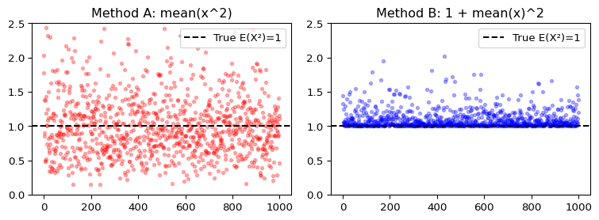
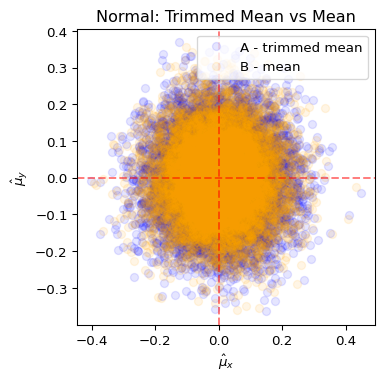
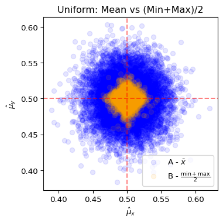

14wk-2: 연습문제 (4)
MLE 기반 추정
1. 아래는 정규분포 \(N(0,1)\)에서 중심 \(\mu=0\)을 추정하는 시뮬레이션 결과이다. (단, \(n=100\), \(m=10000\))
- \(n\)개의 샘플 \(x_1, \ldots, x_{n}\)을 추출하여 A방식과 B방식으로 각각 \(\hat\mu_x\)를 계산
- \(n\)개의 샘플 \(y_1, \ldots, y_{n}\)을 독립적으로 추출하여 A방식과 B방식으로 각각 \(\hat\mu_y\)를 계산
- 위 과정을 \(m\)번 반복하여 \((\hat\mu_x, \hat\mu_y)\)를 산점도로 표시 (따라서 점은 각 방식별로 \(m\)개씩 있음)
| 방식 | 추정량 |
|---|---|
| A (파란색) | 상위 10%, 하위 10%를 제외한 후 평균 (trimmed mean) |
| B (주황색) | 표본평균 \(\bar{x}\) |

그림을 해석한 것으로 옳은 것을 모두 고르라.
- A방식은 MLE에 근거한 방식이다.
- B방식은 MLE에 근거한 방식이다.
- B방식이 A방식보다 더 효율적이다. 왜냐하면 분포와 상관없이 항상 표본평균으로 모평균을 추정하는 것이 합리적이기 때문이다.
- \(n\)이 커진다면 두 방식 모두 \(m\)개의 점들이 점점 중앙으로 몰리게 될 것이다.
2. 아래는 정규분포 \(N(0,1)\)에서 중심 \(\mu=0\)을 추정하는 시뮬레이션 결과이다. (단, \(n=100\), \(m=10000\))
- \(n\)개의 샘플 \(x_1, \ldots, x_{n}\)을 추출하여 A방식과 B방식으로 각각 \(\hat\mu_x\)를 계산
- \(n\)개의 샘플 \(y_1, \ldots, y_{n}\)을 독립적으로 추출하여 A방식과 B방식으로 각각 \(\hat\mu_y\)를 계산
- 위 과정을 \(m\)번 반복하여 \((\hat\mu_x, \hat\mu_y)\)를 산점도로 표시 (따라서 점은 각 방식별로 \(m\)개씩 있음)
| 방식 | 추정량 |
|---|---|
| A (파란색) | 중앙값 (median) |
| B (주황색) | 표본평균 (mean) |

그림을 해석한 것으로 옳은 것을 모두 고르라.
- 이 경우 중앙값에 의한 추정이 MLE에 근거한 추정법이다.
- 이 경우 표본평균에 의한 추정이 MLE에 근거한 추정법이다.
- \(n\)이 작을 때는 평균이 더 효율적이지만, \(n\)이 커지면 중앙값이 더 효율적이 된다.
- 정규분포에서 중앙값과 평균은 항상 동일한 추정값을 가진다.
3. 아래는 균등분포 \(U(0,1)\)에서 중심 \(\mathbb{E}(X)=0.5\)를 추정하는 시뮬레이션 결과이다. (단, \(n=100\), \(m=10000\))
- \(n\)개의 샘플 \(x_1, \ldots, x_{n}\)을 추출하여 A방식과 B방식으로 각각 \(\hat\mu_x\)를 계산
- \(n\)개의 샘플 \(y_1, \ldots, y_{n}\)을 독립적으로 추출하여 A방식과 B방식으로 각각 \(\hat\mu_y\)를 계산
- 위 과정을 \(m\)번 반복하여 \((\hat\mu_x, \hat\mu_y)\)를 산점도로 표시 (따라서 점은 각 방식별로 \(m\)개씩 있음)
| 방식 | 추정량 |
|---|---|
| A (파란색) | 표본평균 \(\bar{x}\) |
| B (주황색) | \(\frac{\min(x)+\max(x)}{2}\) |

그림에 대한 해석으로 옳은 것을 모두 고르라.
- A방식이 MLE에 근거한 추정법이다.
- B방식이 MLE에 근거한 추정법이다.
- 그림에서는 B방식에 근거한 추정법이 더 우수해 보이는데, 이는 \(n\)이 작아서 생기는 특별한 현상이고, \(n\)이 커진다면 점점 표본평균에 근거한 추정법이 더 우세해진다.
- 그림에서는 B방식에 근거한 추정법이 더 우수해보이는데, 이는 표본평균으로 모평균을 추정하는 것이 항상 최선은 아닐수도 있음을 의미한다.
4. 문제 3의 그림에서 주황색 점들의 분포 모양과 파란색 점들의 분포 모양에 대한 설명으로 올바른 것을 모두 고르시오.
- 주황색과 파란색 점들의 분포 모양이 다른 이유는 \(n\)이 적기 때문이다.
- 주황색 점들이 파란색 점들처럼 원형이 아니라 사각형에 가까운 이유는 \(\min\), \(\max\)에 중심극한정리가 성립하지 않기 때문이다.
- \(n\)이 커지면 주황색 점들도 파란색 점들과 같은 모향이 된다.
- \(n\)이 커지면 파란색 점들도 주황색 점들과 같은 모향이 된다
5. 피셔(Fisher)의 MLE에 대한 주장으로 틀린 것은?
- 분포를 고려하지 않고 무조건 표본평균을 사용하는 것은 최선이 아닐 수 있다.
- 정규분포에서 적률법(MME)과 MLE가 일치하는 것은 우연이다.
- 균등분포에서 표본평균이 중심의 MLE이다.
- MLE는 분포의 특성을 고려하여 최적의 추정량을 찾는다.
6. \(X \sim N(\mu, 1)\)에서 10개의 샘플을 얻었다. \(\mathbb{E}(X^2)\)를 추정하는 두 방법을 비교한다.
- A방식: \(\overline{x^2}\) (표본 제곱의 평균)
- B방식: \(1 + \bar{x}^2\)
방법 A와 B중 MLE에 근거한 방식이 무엇인가? (이유도 쓸 것) MLE에 근거한 방식과 그렇지 않은 방식에 대하여 추정의 효율을 비교하라.
7. 균등분포 \(U(a,b)\)의 가능도함수는 다음과 같다: \[L(a,b)=\frac{1}{(b-a)^n} \times I(a \leq \min(data)) \times I(\max(data) \leq b)\]
이 가능도함수에 대한 설명으로 틀린 것은?
- \(a > \min(data)\)이면 가능도는 0이다
- \(b < \max(data)\)이면 가능도는 0이다
- \((b-a)\)가 클수록 가능도가 커진다
- \(a=\min(data)\), \(b=\max(data)\)일 때 가능도가 최대이다